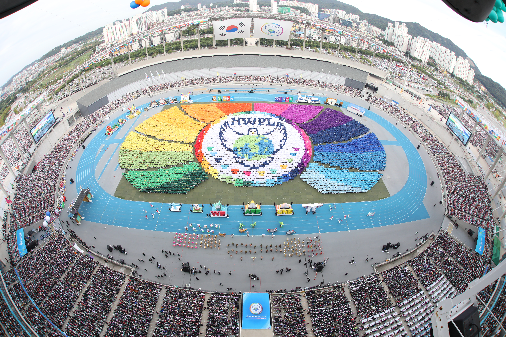
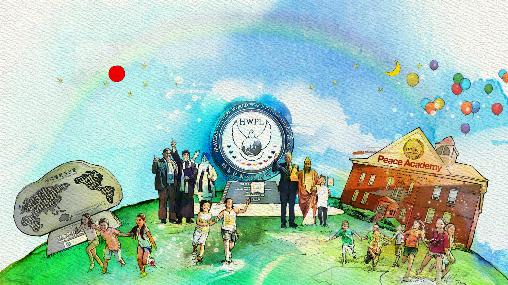

Бидний тухай
HWPL байгууллага нь БНСУ-ын Сөүл хотын захиргаанд бүртгэлтэй төрийн бус байгууллага бөгөөд НҮБ-ын Глобал харилцаа холбооны хэлтэс (DGC хуучнаар DPI)-тэй хамтран ажиллахаас гадна НҮБ-ын Эдийн засаг, Нийгмийн Зөвлөл (ECOSOC)-д “Тусгай зөвлөх” статустайгаар үйл ажиллагаа явуулдаг. HWPL байгууллага нь “Дэлхийн энх тайвны тунхаглал”-ын үзэл санааны дагуу энх тайвны соёлоор дамжуулан энх тайвныг тогтоох, ард иргэдийг соён гэгээрүүлэх зорилготойгоор дэлхий даяар үйл ажиллагаа явуулж байна.
HWPL байгууллага нь хамтрагч байгууллага болох Олон улсын эмэгтэйчүүдийн энх тайвны нийгэмлэг (IWPG) болон харьяа байгууллага болох Олон улсын залуучуудын энх тайвны нийгэмлэг (IPYG)-тэй хамтран үндэс угсаа, ёс заншил, үзэл суртлыг үл хамааран олон улсын энх тайвны хөдөлгөөнийг түүчээлж байгаа бөгөөд уг хөдөлгөөнд дэлхийн бүхий л салбарын удирдагчид манлайлан оролцож байна. Түүнчлэн бид хэлэлцүүлгүүд, боловсрол, сайн дурын ажил, кампанит ажлууд гэх мэт олон янзын үйл ажиллагаагаар дамжуулан энх тайвны соёлыг түгээн дэлгэрүүлэх замаар НҮБ-ын Тогтвортой хөгжлийн зорилгуудад хувь нэмэр оруулахыг эрмэлздэг.
HWPL байгууллагын энх тайвны үйл ажиллагаа нь ирээдүй хойч үед маань тогтвортой энх тайван тогтож баталгаажих хүртэл үргэлжлэх болно.

Бидний үйл ажиллагаа
2013 онд HWPL байгууллага нь “Дэлхийн энх тайвны тунхаглал”-аараа дамжуулан дайныг зогсоож, энх тайвныг тогтоохын тулд олон улсын эрх зүйн шинэ баримт бичиг шаардлагатай байгааг тунхаглав. 2014 оны Дэлхийн энх тайвны дээд хэмжээний чуулганы үеэр дэлхийн өнцөг булан бүрээс ирсэн хууль эрх зүй, улс төрийн удирдагчид уг баримт бичгийг боловсруулах хамтын ажиллагааны гэрээнд гарын үсэг зурсан юм. Жил хагасын дотор буюу 2016 оны 3-р сарын 14-нд “Дайныг зогсоож, энх тайвныг тогтоох тунхаглал” (DPCW) тунхаглагдсан бөгөөд HWPL байгууллага нь DPCW тунхаглалыг олон улсын хууль болгон батлуулахаар идэвхтэй ажиллаж байна.
HWPL байгууллагын уриа
XXI зуунд амьдарч буй 8 тэрбум хүн бүр нэг цаг үед, нэг зорилготой төрсөн энх тайвны элч нар юм. Энх тайван бол цөөхөн хүнд зориулагдсан зүйл биш, харин бид бүгдийн хүртэх ёстой соёл юм.
Оюун санааны өөрчлөлт дэлхийг өөрчилж чадна. Бидний хандлага өөрчлөгдвөл энх тайвныг тогтоож чадна. Дэлхийн 8 тэрбум хүн нэг болж нэгдэж чадвал бүх зүйл боломжтой. Тиймээс бүгд хамтдаа энх тайвны элч болцгооё.
